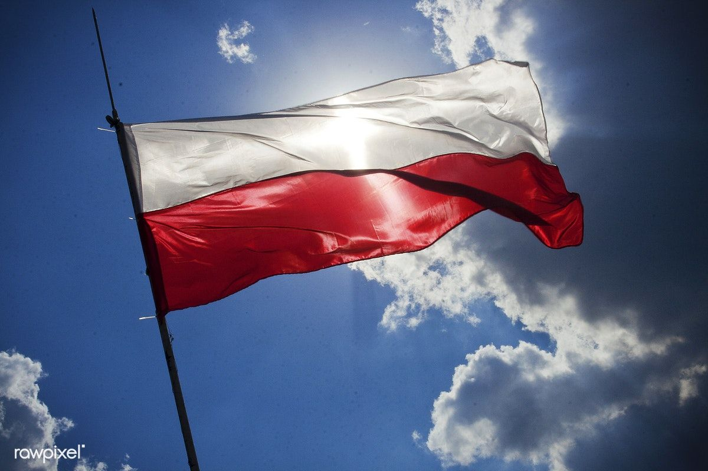

BRIEF HISTORY

If we trace back the history of Poland, we may find ourselves starting to go as far as the Iron Age. Needless to say, she has alot of history behind her, as if we can also learn almost the entire history of the world, or at least the European continent. A Polish friend of mine asked me not once, not twice, but thrice if the Polish language sounds like Slavic to me. I said that it does, because why not, one of the earliest dwellers in its land were the Western Polans, who gave the country its name.
Came the 10th century AD when Poland saw its first dynasty, and the name of the famous Duke Mieszko I arose, who adopted Christianity. Years later, his son Bolesław I the Brave transformed the country into a Medieval kingdom.
During the 14th century, Poland, ruled by the Jagiellonian dynasty, tied up with Lithuania, making the combination of them the largest country in Europe at that time, which in 1569 was constituted and called the Polish-Lithuanian Commonwealth.
The early 19th century was not a good period for the Republic of Poland. If you want to act smart, watch some documentaries because I won't be touching alot about it, just some turning points. It says "brief" anyway.